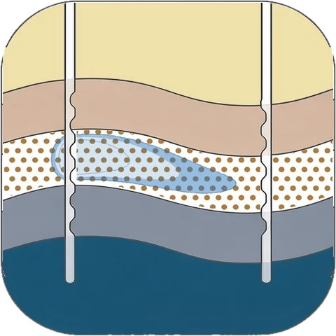
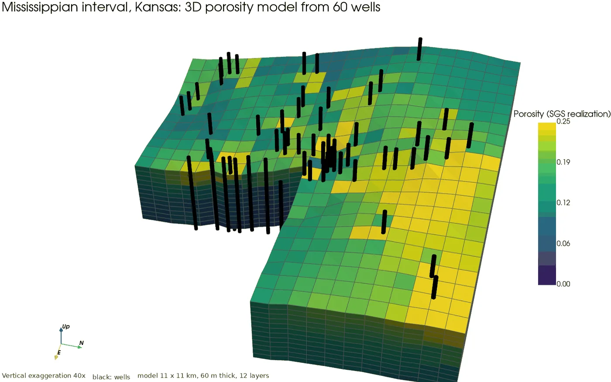
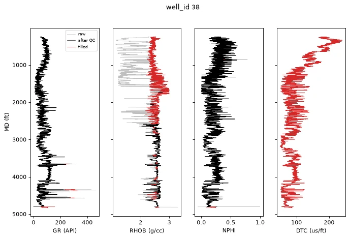
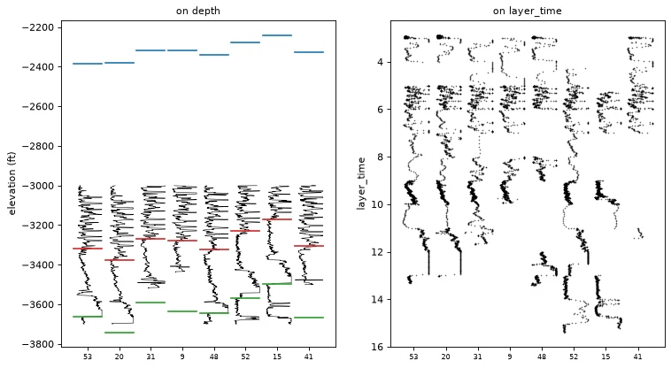
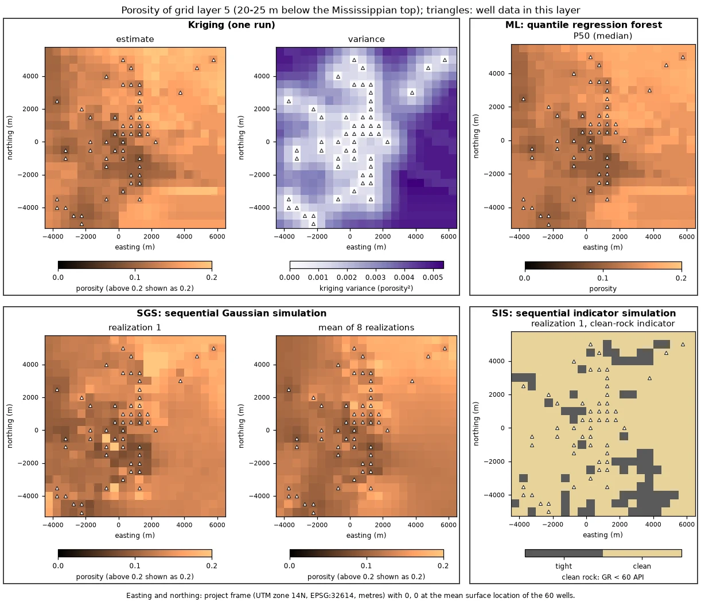
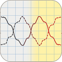

Python · Rust · Well logs and subsurface models
SubsurfiX
SubsurfiX takes you from a folder of well logs to a 3D property model you can simulate on: log clean-up, gap filling, well correlation, faulted grids, property modeling, and flow, heat and CO₂ storage simulation in one Rust engine, run from Python or the command line, with every filled value traceable.

Overview
SubsurfiX takes you from a folder of well logs to a checked, correlated log set and a 3D property model you can run flow and heat simulations on. I built it because these steps usually live in separate tools, and every hand-off (cleaning logs, filling gaps, correlating wells, gridding, simulating) is where things get lost or quietly changed. Here it's one project file and one run: every filled value carries a provenance code, so you always know what was measured and what was filled. The engine is in Rust, and you drive it from Python or the command line.

Examples
Each step has an executed notebook on open data from the Kansas Geological Survey and FORCE 2020. The flow examples (09, 10 and 14) run on the whole 11 × 11 km Kansas model.



Same solver, different fluids
Key features
Log clean-up and gap filling
Read LAS files and well surveys, mark bad sections, and fill gaps with rules and LightGBM. Every value carries a code that says whether it was measured or filled.
Well correlation
Match the same beds from well to well automatically, solving all wells together.
Grids and properties
Regular grids, or corner-point grids with faults read from GRDECL files. Fill them with porosity and rock type by kriging, simulation or machine learning, with P10/P50/P90 cases.
Flow and heat (FIM-OBL)
A fully implicit finite-volume solver for water, water–oil, oil–gas and CO₂–brine, plus heat, on regular and faulted grids. Flow diagnostics show where the fluid goes and how long it takes.
CO₂ storage screening
A vertical-equilibrium model, after the MRST co2lab papers, that runs in seconds and reports structural and residual trapping. Example 13 compares it with FIM-OBL on the same case.
MODFLOW 6 and data exchange
Groundwater flow and heat through MODFLOW 6 and FloPy, Leapfrog through OMF files, and OpenGeoSys mesh files (.vtu).
Installation
pip install subsurfixNeeds Python 3.12 or newer. Ready-built wheels are for Apple Silicon Macs. On other systems pip builds from source, which needs Rust, a C/C++ compiler and libclang. Examples 09 and 10 also need the MODFLOW 6 program.
Citation
Lai, L.S.-H. (2026) SubsurfiX. Zenodo, https://doi.org/10.5281/zenodo.23832007
SubsurfiX is under the GNU Affero General Public License 3.0 or later.

pyLogDigitizer pyLogDigitizer turns scanned paper well logs (TIFF) into LAS files, with a local browser app to check and fix every step. Nothing leaves your machine.